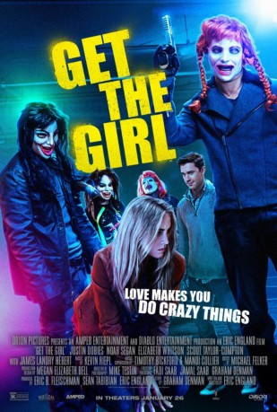
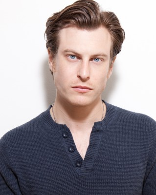

#6545 Get the Girl - Love Can Be Twisted
 
 IMDB-Wertung: 5.0 / 10
IMDB-Wertung: 5.0 / 10  Metascore: 0
Metascore: 0 
Es gibt wirklich kaum etwas, woran es Clarence (Justin Dobies) im Leben mangeln könnte. Schließlich ist er ziemlich wohlhabend und das Schicksal hat ihn sogar mit recht gutem Aussehen gesegnet. Mit diesen Voraussetzungen könnte er jede Frau bekommen, die er will. Aber sein Herz schlägt nur für eine und zwar für Alexandra (Elizabeth Whitson). Leider versagt Clarence völlig bei ihr, denn er ist viel zu schüchtern, um sie überhaupt anzusprechen. Zum Glück kennt er mit Patrick (Noah Segan) einen echten Frauenhelden und zusammen kommen sie auf einen scheinbar narrensicheren Plan: Sie inszenieren die Entführung von Alexandra, damit Clarence als ihr strahlender Retter in Erscheinung treten kann. Als dann einer der falschen Kidnapper versehentlich getötet wird, muss Clarence plötzlich Alexandra wirklich retten…
Jahr: 2017
Dauer: 87 Minuten
FSK: 18
Land: USA Studio: Orion PicturesTonspuren: DTS - ,
Untertitel:
Auflösung: 1080p (1920x800) Größe: 3942 MB
Genre: Action, Thriller, Komödie, Krimi
Regisseur: Eric England
Drehbuch: Eric England
Soundtrack:
Darsteller:
- Justin Dobies als Clarence
- Elizabeth Whitson als Alex
-  Noah Segan als Patrick
 James Landry Hébert als Carl
James Landry Hébert als Carl- Scout Taylor-Compton als Jade
- Adi Shankar als KJ
- Daniel Quinn als Officer Talley
- Krystal Vayda als Dive Bartender
- Joanna Sotomura als Jane
- Julianna Barninger als Body Shot Girl , uncredited
- Cosima Cabrera als Nightclub Patron , uncredited
- Collin Lee Ellis als Stockbroker , uncredited
- Eric England als Dispatch , uncredited
- Elester Latham als Stockbroker , uncredited
- Hitoshi Masaki als Stockbroker , uncredited
- Kelsie Mathews als Nightclub Patron , uncredited
- Matt Mercer als Post 1 , uncredited
- John T. Woods als Officer Outside House , uncredited
- Jerry Purpdrank als Embry
- Graham Denman als Trent
- Jodie Bullock als Cocktail Waitress
- Heather M. Kayal als Champagne Girl , uncredited
- Sarah Paek als Nightclub Patron , uncredited
- Terra Kimberly Scott als Nightclub Patron , uncredited
Datei: X:\FSK18-2017\Get the Girl - Love Can Be Twisted (2017, FSK18, 1920x800).mkv seit 07.07.2017
Festplatte: FSK18
 Es gibt insgesamt 24 Filme in der Gruppe 'FSK18-2017'
Es gibt insgesamt 24 Filme in der Gruppe 'FSK18-2017'